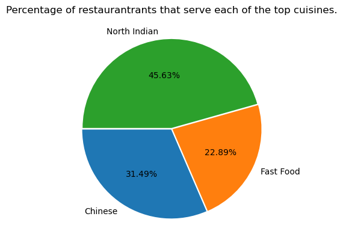

A dataset of 1,074 unicorn companies was analyzed to uncover valuation trends, industry dominance, and investor impact. It was found that most
unicorns emerged between 2012 and 2016, with Fintech and Internet Software leading the sectors. A strong correlation between funding and valuation
was observed, while top investors were linked to faster growth. The analysis highlights global valuation disparities and offers insights for entrepreneurs,
investors, and policymakers.


As part of a Data Analyst internship at MeriSkill, a detailed sales data analysis was conducted on over 185,000 records using Python and visualization tools. Key business
questions were addressed, revealing peak sales in Q4, top-performing cities like San Francisco, and high-demand products such as AAA Batteries. Patterns in sales hours and bundled purchases were identified
to guide strategic promotions. Actionable insights were translated into data-driven recommendations to optimize revenue and customer engagement.

As part of a Data Analyst internship at Cognifyz Technologies, an exploratory analysis was conducted on a global restaurant dataset of over 9,500 entries. Python and data visualization tools were
used to identify cuisine trends, pricing patterns, and customer behavior across regions. North Indian, Chinese, and Fast Food were found dominant, while online delivery was linked to higher ratings. Actionable insights were
derived to guide restaurant businesses in service strategy, pricing, and customer engagement.
An in-depth analysis was conducted on lightning strike data from 2016 to 2018, using over 13 million records sourced from NOAA. Spatial and
temporal trends were examined, revealing consistent lightning hotspots in Cuba and the southern U.S., with peak activity during summer months. Visualizations were generated
to highlight seasonal patterns and high-risk areas across 170,000+ unique locations. These insights support disaster preparedness, climate research, and weather-related
infrastructure planning.

This project identified the top-paid jobs, in-demand skills in those jobs and optimal skills in the field of Data-Analytics. The result of this project is critical
to feature and current jobseekers or for anyone interested about the jobs and skills in the field. As of this analysis SQL is a highly demanded and optimum
skill in the field of interest followed by python.

As a member of the data analytics team,
I was tasked with performing a granular analysis to understand which product subcategories, categories, and segments are profitable.
It is Found that accessories, art, copiers, envelopes, fasteners, labels, and paper are profitable subcategories in all states. Subcategories such as tables, binders,
bookcases, machines, storage, suppliers, and tables are operating at a loss in more than 5 states, and need correction measures.

This work is aimed to create a fully-automated system that can use today's weather data for a given location to predict whether it will rain at the location tomorrow.
For this task, a data set that contains about 10 years of daily weather observations from numerous Australian weather stations is used. LogisticRegression based automated
system was developed with accuracy on the test and validation set are above 84%.

This work uses data from 'https://www.kaggle.com/datasets/tamirat2022/annual-medical-expenditure' containing verified historical data, consisting of the aforementioned information and the actual medical charges incurred by over 1300 customers. The result automated system has RMSE = 5801.49 and r2_score = 78% and The three most important features are 'smoker', 'bmi', and 'age'.